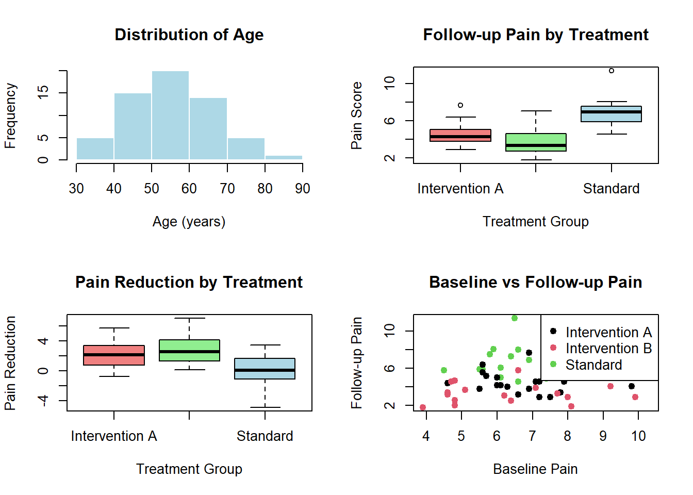
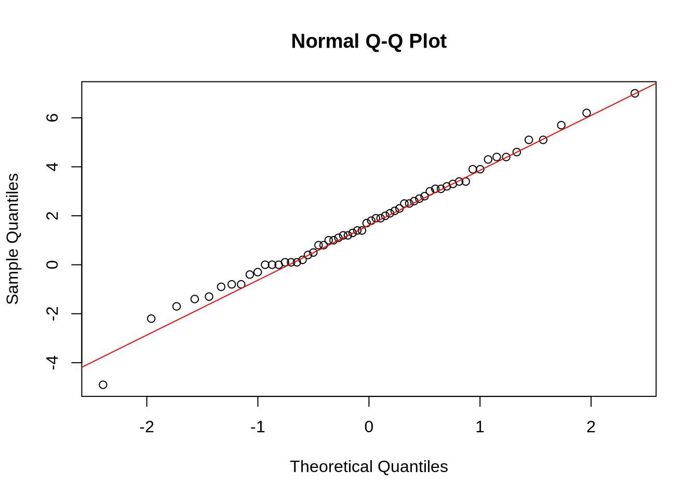

# Convert to factor
pain_level <- factor(c("low", "medium", "high", "low", "high"))
# Ordered factor (for ordinal data)
pain_level <- factor(c("low", "medium", "high", "low", "high"),
levels = c("low", "medium", "high"),
ordered = TRUE)Preliminaries
Preliminaries
Preliminary Steps for Data Analysis
Before conducting statistical analyses in R, it’s crucial to follow these steps:
Define Your Research Question and Hypothesis
- Research Question: Start with a clear, concise research question relevant to your primary interest.
- Hypothesis: Formulate a testable statement that answers your research question.
- Null Hypothesis (H₀): Represents no effect or difference.
- Alternative Hypothesis (Hₐ): Represents an effect or difference.
Example: - Research Question: Does a new pain management intervention reduce pain scores compared to standard care? - H₀: The mean pain score is the same for both groups. - Hₐ: The mean pain score differs between groups.
Pick Appropriate Variables and Measures
- Identify key variables relevant to your research question.
- Choose between continuous or categorical variables based on the type of data available.
- Continuous Variables: Unlimited set of values (e.g., weight, age, blood pressure).
- Categorical Variables: Limited set of values (e.g., treatment status, diagnosis).
- Ordinal: Ordered categories (e.g., pain rating - low, medium, high).
- Nominal: Unordered categories (e.g., sex - male, female).
- Dichotomous: Only two levels (e.g., yes/no, treatment/control).
💡 R Tip: In R, categorical variables should be stored as factors. Use
factor()to convert character variables to factors, especially for ordinal data where you can specify the order.
Understand the P-Value: Pros and Cons
- The p-value is a statistical measure that helps assess evidence against the null hypothesis.
- Pros:
- Easy to interpret.
- Helps determine statistical significance.
- Cons:
- Often misinterpreted (e.g., “significant” does not always imply clinical relevance).
- Can be misleading in the presence of small sample sizes.
- Does not measure effect size or practical importance.
💡 R Tip: In R, p-values are typically found in the output of statistical tests. Look for columns labeled
Pr(>|t|),p-value, or similar. A common threshold is p < 0.05 for statistical significance.
Determine Sample Size and Power
- Sample Size: Ensure that the proposed sample is large enough to answer your research question confidently.
- Power Analysis: Conduct a power analysis to determine the minimum sample size required.
- Power: Probability of rejecting a false null hypothesis (typically 0.80 or 80%).
- Type I Error (α): Probability of a false positive (usually 0.05).
- Type II Error (β): Probability of a false negative (usually 0.20).
- Factors Influencing Power:
- Effect size
- Significance level
- Sample size
Power Analysis in R
R has the pwr package for power calculations:
# Install the package (only once)
install.packages("pwr")
# Load the package
library(pwr)
# Example: Power analysis for t-test
# What sample size do we need to detect a medium effect (d=0.5)
# with 80% power at alpha=0.05?
pwr.t.test(d = 0.5, # Effect size (Cohen's d)
sig.level = 0.05, # Alpha
power = 0.80, # Desired power
type = "two.sample")
# Example: What power do we have with n=30 per group?
pwr.t.test(n = 30,
d = 0.5,
sig.level = 0.05,
type = "two.sample")💡 R Tip: Common effect sizes (Cohen’s d): small = 0.2, medium = 0.5, large = 0.8. The
pwrpackage has functions for many test types:pwr.t.test(),pwr.anova.test(),pwr.chisq.test(), etc.
Working with Data in R
Setting Up Your Workspace
# Check your current working directory
getwd()
# Set working directory to where your data is stored
setwd("C:/Users/YourName/Documents/NPHD9040")
# Or use RStudio: Session → Set Working Directory → Choose Directory💡 R Tip: Keep all files for a project in one folder. This makes it easier to manage your data, scripts, and output.
Reading Data into R
For a more detailed guide on importing different file types (including using the RStudio GUI), see the Getting Started with R module.
# Read CSV file
my_data <- read.csv("patient_data.csv")
# Select file interactively
# my_data <- read.csv(file.choose())
# Read CSV with specific options
my_data <- read.csv("patient_data.csv",
header = TRUE, # First row contains column names
stringsAsFactors = FALSE) # Don't auto-convert to factors
# For Excel files, use readxl package
library(readxl)
my_data <- read_excel("patient_data.xlsx")
# View the data
View(my_data) # Opens in spreadsheet viewer
head(my_data) # First 6 rows
tail(my_data) # Last 6 rowsTaking Your Data on a Date: Exploratory Data Analysis
- Collect Consistent and High-Quality Data:
- Use secure electronic records whenever possible (e.g., REDCap).
- Consult the Institutional Review Board (IRB) before beginning data collection.
- Take note of possible biases or skewed observations that may affect results.
- Transform and Organize Data:
- Raw Data: Direct data collected from your research.
- Tidy Data: Organized and transformed version of raw data.
- Apply necessary transformations (e.g., standardization) to clean your data.
- Conduct Exploratory Data Analysis:
- Summarize your data using basic descriptive statistics.
- Visualize your data through various graphs (e.g., histograms, box plots).
- Identify potential differences and insights within or between groups.
Descriptive Statistics in R
# Summary statistics for all variables
summary(my_data)
# Mean, median, standard deviation for a specific variable
mean(my_data$age)
median(my_data$age)
sd(my_data$age)
# Remove missing values with na.rm = TRUE
mean(my_data$age, na.rm = TRUE)
# Frequency table for categorical variables
table(my_data$treatment_group)
# Cross-tabulation
table(my_data$treatment_group, my_data$outcome_category)
# Proportions
prop.table(table(my_data$treatment_group))💡 R Tip: Use
str(my_data)to see the structure of your data frame. This shows variable names, types, and first few values - very helpful for understanding your data!
Checking for Missing Data
# Check for missing values
sum(is.na(my_data)) # Total missing values
# Missing values per variable
colSums(is.na(my_data))
# Identify rows with any missing values
my_data[!complete.cases(my_data), ]
# Remove rows with missing values (use with caution!)
my_data_complete <- na.omit(my_data)Comprehensive Example: Complete Exploratory Analysis
Let’s walk through a complete exploratory data analysis workflow in R:
# ============================================
# Exploratory Data Analysis Example
# Research Question: Do pain scores differ by treatment group?
# ============================================
# Step 1: Create sample data (normally you'd read from a file)
set.seed(123) # For reproducibility
pain_study <- data.frame(
patient_id = 1:60,
age = round(rnorm(60, mean = 55, sd = 12)),
sex = sample(c("Male", "Female"), 60, replace = TRUE),
treatment = rep(c("Standard", "Intervention A", "Intervention B"), each = 20),
baseline_pain = round(rnorm(60, mean = 7, sd = 1.5), 1),
followup_pain = c(
round(rnorm(20, mean = 6.5, sd = 1.5), 1), # Standard
round(rnorm(20, mean = 4.5, sd = 1.5), 1), # Intervention A
round(rnorm(20, mean = 3.8, sd = 1.5), 1) # Intervention B
)
)
# Step 2: Examine the data structure
cat("Data Structure:\n")Data Structure:str(pain_study)'data.frame': 60 obs. of 6 variables:
$ patient_id : int 1 2 3 4 5 6 7 8 9 10 ...
$ age : num 48 52 74 56 57 76 61 40 47 50 ...
$ sex : chr "Male" "Female" "Male" "Male" ...
$ treatment : chr "Standard" "Standard" "Standard" "Standard" ...
$ baseline_pain: num 8.5 7.8 7.4 6.1 9 6.1 10.3 9.3 6.6 5.5 ...
$ followup_pain: num 7.7 7.7 7 5 6.3 6.1 7.3 5.9 8 5.9 ...cat("\n\nFirst few rows:\n")
First few rows:head(pain_study) patient_id age sex treatment baseline_pain followup_pain
1 1 48 Male Standard 8.5 7.7
2 2 52 Female Standard 7.8 7.7
3 3 74 Male Standard 7.4 7.0
4 4 56 Male Standard 6.1 5.0
5 5 57 Male Standard 9.0 6.3
6 6 76 Female Standard 6.1 6.1# Step 3: Check for missing data
cat("\n\nMissing values per variable:\n")
Missing values per variable:colSums(is.na(pain_study)) patient_id age sex treatment baseline_pain
0 0 0 0 0
followup_pain
0 # Step 4: Convert categorical variables to factors
pain_study$sex <- factor(pain_study$sex)
pain_study$treatment <- factor(pain_study$treatment)
# Step 5: Descriptive statistics - Overall
cat("\n\nOverall Summary Statistics:\n")
Overall Summary Statistics:summary(pain_study) patient_id age sex treatment
Min. : 1.00 Min. :31.00 Female:33 Intervention A:20
1st Qu.:15.75 1st Qu.:48.75 Male :27 Intervention B:20
Median :30.50 Median :55.50 Standard :20
Mean :30.50 Mean :55.73
3rd Qu.:45.25 3rd Qu.:63.00
Max. :60.00 Max. :81.00
baseline_pain followup_pain
Min. : 3.900 Min. : 1.800
1st Qu.: 5.675 1st Qu.: 3.625
Median : 6.600 Median : 4.650
Mean : 6.797 Mean : 5.063
3rd Qu.: 7.800 3rd Qu.: 6.325
Max. :10.300 Max. :11.400 # Step 6: Descriptive statistics by group
cat("\n\nMean Follow-up Pain by Treatment:\n")
Mean Follow-up Pain by Treatment:tapply(pain_study$followup_pain, pain_study$treatment, mean)Intervention A Intervention B Standard
4.54 3.83 6.82 cat("\n\nSD of Follow-up Pain by Treatment:\n")
SD of Follow-up Pain by Treatment:tapply(pain_study$followup_pain, pain_study$treatment, sd)Intervention A Intervention B Standard
1.220181 1.598387 1.502489 # Step 7: Create pain reduction variable
pain_study$pain_reduction <- pain_study$baseline_pain - pain_study$followup_pain
cat("\n\nMean Pain Reduction by Treatment:\n")
Mean Pain Reduction by Treatment:tapply(pain_study$pain_reduction, pain_study$treatment, mean)Intervention A Intervention B Standard
2.145 2.845 0.210 # Step 8: Frequency tables
cat("\n\nSample Size by Treatment:\n")
Sample Size by Treatment:table(pain_study$treatment)
Intervention A Intervention B Standard
20 20 20 cat("\n\nSample Size by Treatment and Sex:\n")
Sample Size by Treatment and Sex:table(pain_study$treatment, pain_study$sex)
Female Male
Intervention A 10 10
Intervention B 12 8
Standard 11 9# Step 9: Visualize the data
par(mfrow = c(2, 2)) # 2x2 grid of plots
# Histogram of age
hist(pain_study$age,
main = "Distribution of Age",
xlab = "Age (years)",
col = "lightblue",
border = "white")
# Boxplot of follow-up pain by treatment
boxplot(followup_pain ~ treatment,
data = pain_study,
main = "Follow-up Pain by Treatment",
xlab = "Treatment Group",
ylab = "Pain Score",
col = c("lightcoral", "lightgreen", "lightblue"))
# Boxplot of pain reduction by treatment
boxplot(pain_reduction ~ treatment,
data = pain_study,
main = "Pain Reduction by Treatment",
xlab = "Treatment Group",
ylab = "Pain Reduction",
col = c("lightcoral", "lightgreen", "lightblue"))
# Scatter plot of baseline vs follow-up pain
plot(pain_study$baseline_pain, pain_study$followup_pain,
main = "Baseline vs Follow-up Pain",
xlab = "Baseline Pain",
ylab = "Follow-up Pain",
pch = 19,
col = as.numeric(pain_study$treatment))
legend("topright",
legend = levels(pain_study$treatment),
col = 1:3,
pch = 19)
# Reset plot layout
par(mfrow = c(1, 1))
# Step 10: Check assumptions visually
# Normality of pain reduction
cat("\n\nShapiro-Wilk Test for Normality (Pain Reduction):\n")
Shapiro-Wilk Test for Normality (Pain Reduction):shapiro.test(pain_study$pain_reduction)
Shapiro-Wilk normality test
data: pain_study$pain_reduction
W = 0.99173, p-value = 0.9575# Q-Q plot for normality
qqnorm(pain_study$pain_reduction)
qqline(pain_study$pain_reduction, col = "red")
# Step 11: Save cleaned data (optional)
# write.csv(pain_study, "pain_study_cleaned.csv", row.names = FALSE)
cat("\n\n=== Exploratory Analysis Complete ===\n")
=== Exploratory Analysis Complete ===cat("Next steps: Proceed with formal statistical testing in the [Introduction to ANOVA](introduction-to-anova.qmd) lecture.\n")Next steps: Proceed with formal statistical testing in the [Introduction to ANOVA](introduction-to-anova.qmd) lecture.Key Takeaways
✅ Always start with a clear research question and hypothesis
✅ Understand your variables and their measurement scales
✅ Conduct power analysis before data collection
✅ Explore your data thoroughly before formal testing
✅ Check for missing data and outliers
✅ Visualize your data to understand distributions and relationships
✅ Document your process in R scripts for reproducibility
💡 R Tip: Save your R code in a script file (.R) as you work. This creates a complete record of your analysis that you can run again later or share with colleagues. Use comments (#) liberally to explain what each section does!
Conclusion
Following these preliminary steps will ensure a solid foundation for statistical analysis. Carefully consider each step, from hypothesis formulation to data collection and exploration. Being thorough in the preliminaries will enhance the validity and reliability of your findings.
Remember: R makes your analysis reproducible. Every step is documented in code, which means you (or others) can verify and replicate your work!